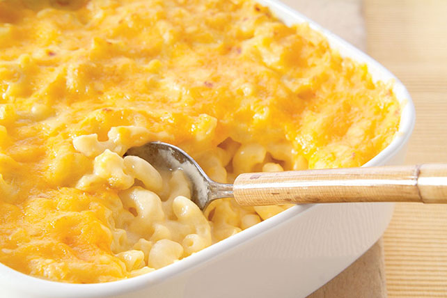

Mac N' Cheese

Description
Savor a saucy, cheese crowd-pleaser with this Classic Macaroni and Cheese! You can't go wrong this delicious recipe.
Total time: 40 minutes
Prep time: 20 minutes
Cook time: 20 minutes
Ingredients
- 3 tbsp. butter or margarine
- 2 tbsp. flour
- 2 cups of milk
- 1 kg of shredded cheese (cheddar recommended)
- 2 cups of elbow macaroni, cooked
Steps
- Pre-heat oven to 350d F.
- Melt butter in large saucepan on low heat.
- Stir in flour; cook and stir for 2 minutes or until bubbly.
- Gradually stir in milk; bring to boil on medium heat, stirring constantly.
- Simmer on low heat for 3 to 5 minutes, or until thickened, stirring constantly.
- Add 1 and a half cups of cheese; cook and stir for 2 to 3 minutes, or until melted.
- Add and stir in macaroni.
- Spoon into 1 and three-quarters casserole sprayed with cooking sprayl sprinkle with remaining cheese.
- Bake for 20 minutes or until heated through.
Return to Homepage